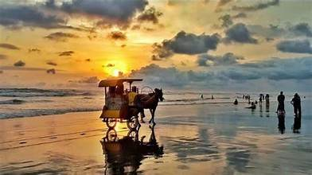

Tempat yang pernah dikunjungi
Berikut tempat-tempat yang pernah saya kunjungi
| No | Nama Tempat | Kota | Waktu Berkunjung | Kegiatan |
|---|---|---|---|---|
| 1 | Pantai Parangtritis | Yogyakarta | 2025 | Menikmati pemandangan |
Galeri
Berikut beberapa foto dari perjalanan saya

Daftar tempat yang pernah saya kunjungi berisi daftar beberapa tempat yang pernah saya kunjungi, lengkap dengan lokasi, dan waktu berkunjung
Berikut tempat-tempat yang pernah saya kunjungi
| No | Nama Tempat | Kota | Waktu Berkunjung | Kegiatan |
|---|---|---|---|---|
| 1 | Pantai Parangtritis | Yogyakarta | 2025 | Menikmati pemandangan |
Berikut beberapa foto dari perjalanan saya
